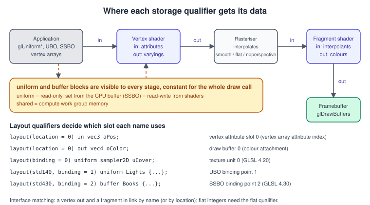
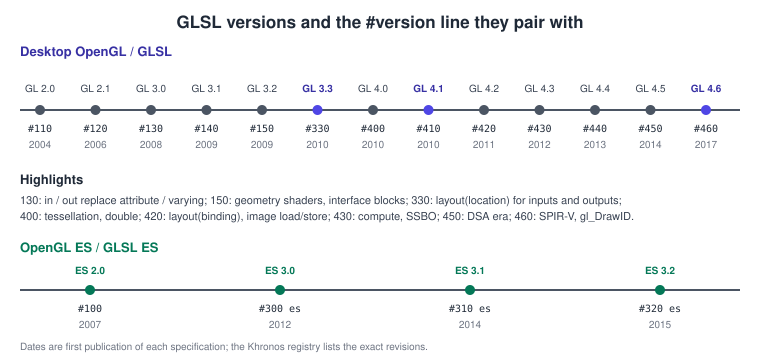
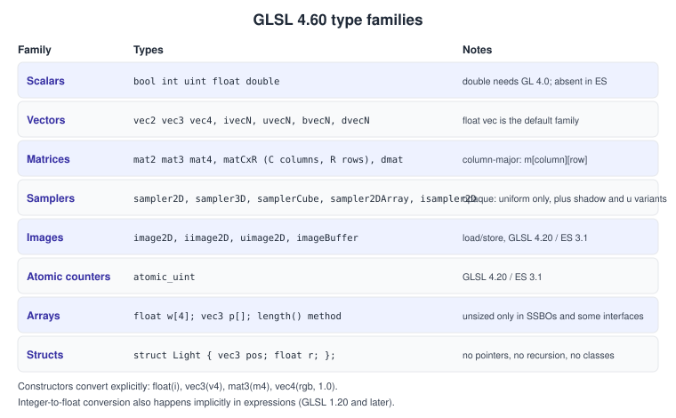
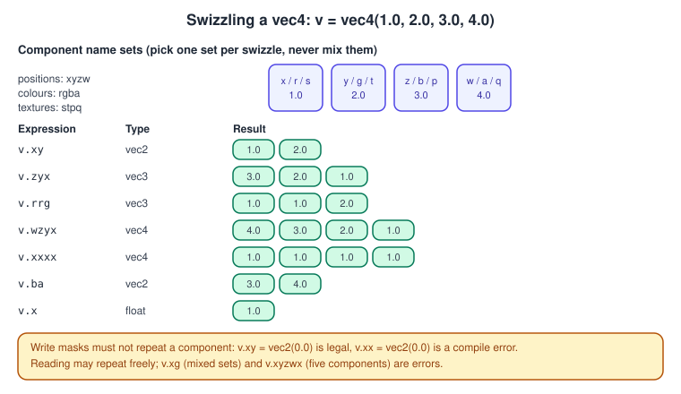
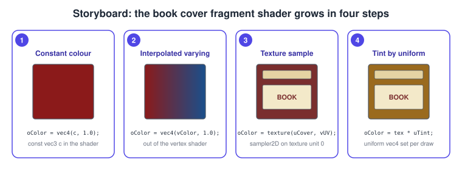

The OpenGL Shading Language (GLSL)
|
This content was generated with the assistance of AI and should be verified against the official documentation before being relied on in production. |
GLSL is the C-like language in which every OpenGL shader is written. A shader is a small program the GPU runs once per vertex, per fragment or per work item; this page teaches the language itself, whereas Shaders and Programs teaches how to compile and link it and Uniforms, UBOs and SSBOs how to feed it data. Nothing in GLSL is specific to the Bookshelf, but every example here is a piece of it: the book cover shader, the interface between the book vertex and fragment stages and a small playground program that lets you try the language on your own machine.
The facts were checked in November 2026. The versions documented are OpenGL Shading Language 4.60 (specification revision of
August 2023) for desktop OpenGL 4.6 and GLSL ES 3.20 (same revision date) for OpenGL ES 3.2; the Bookshelf GL baseline is
desktop OpenGL 4.1 core with GLSL #version 410 core, because that is the highest version macOS provides. Examples were
written for GLSL 4.10 unless a feature needs more, and each such feature says which version introduced it. The language is
the same on Windows, Linux, macOS and (as GLSL ES, see GLSL ES and
Portability) Android and iOS. The general comparison of shading languages is in
Shading Languages Landscape; where the shaders sit in the pipeline is
in The Rendering Pipeline and
the OpenGL view of it.
What GLSL is and where it runs
GLSL is compiled by the graphics driver at run time, from text you pass to glShaderSource. There is no compiler in
OpenGL itself: the driver of each GPU vendor contains its own front end, which is why the same shader can compile on one
machine and fail on another (a missing semicolon is an error everywhere, but a wrongly sized array index may be accepted by
one driver and rejected by the next). Since OpenGL 4.6 a shader may instead arrive as SPIR-V, produced offline from GLSL by a
tool such as glslang; that route is covered in Shaders and Programs.
A program is made of one shader per stage you use:
| Stage | Runs once per | Typical Bookshelf job |
|---|---|---|
Vertex |
vertex |
apply the model, view and projection matrices to a book corner |
Tessellation control and evaluation |
patch and generated vertex |
subdivide a curved cover (not used by the baseline) |
Geometry |
primitive |
generate dust billboards (not used by the baseline) |
Fragment |
pixel covered by a primitive |
sample the cover texture and light it |
Compute |
work item |
update dust particles |
Only the vertex and fragment stages are needed to draw; this page concentrates on them. The data flow of the stages is the subject of the figure below.

The version line and profiles
Every shader starts with a version directive, and nothing but comments and white space may come before it:
#version 460 core // desktop OpenGL 4.6, core profile
#version 410 core // desktop OpenGL 4.1, what macOS provides
#version 300 es // OpenGL ES 3.0 (and WebGL 2); must say "es"
#version 320 es // OpenGL ES 3.2The number is the GLSL version, the word the profile. Rules that bite:
-
The version must not be higher than the context supports. A 4.1 context rejects
#version 420with an error that mentions the version. -
From GLSL 1.50 the profile is
core(the default when omitted from 150 upward) orcompatibility. Acompatibilityshader may use removed features such asgl_ModelViewMatrix; macOS does not offer a compatibility context. -
A shader with no version directive is GLSL 1.10 (desktop) and the very different language of the legacy fixed-function era, and a
#version 100shader is GLSL ES 1.00. Modern drivers still accept both, but you should not write them. -
The version directive is per shader. All shaders linked into one program may use different versions, but they must agree on every interface, and the lowest version needs to be one your target supports.

GLSL 1.30 onward is the language of this page. Features have a minimum version (for example layout(location) on vertex
inputs needs 3.30 or the extension GL_ARB_explicit_attrib_location, layout(binding) needs 4.20, shader storage blocks
need 4.30). An extension can lift a feature into an older version; enable it explicitly:
#version 410 core
#extension GL_ARB_shading_language_420pack : require // layout(binding) in a 4.1 contextSource: GLSL 4.60 specification
require fails the compile if the extension is missing, enable turns it on and warns if it is, warn and disable
exist but are rarely useful. Query the extension on the CPU first (see
Versions, Profiles and Extensions). Platforms differ
more here than anywhere else: macOS drivers expose few extensions, so a Bookshelf shader that needs 4.2 features simply
does not run there.
The preprocessor
GLSL has a C-like preprocessor: #define, #undef, #if, #ifdef, #else, #elif, #endif, #error,
#pragma, #line and #extension. It is token based (no text pasting beyond macros) and it has no #include; to
share code, concatenate strings on the CPU or use an offline tool (glslang supports GL_GOOGLE_include_directive). Predefined
macros include __LINE__, __FILE__, __VERSION__ (460 for 4.60) and, in desktop shaders compiled with a
core profile, GL_core_profile; ES shaders define GL_ES. These are the usual way to write one source for several
targets:
#ifdef GL_ES
precision highp float;
precision highp int;
#endifSource: GLSL 4.60 specification
Double-underscore names are reserved for the implementation; do not define your own.
Types
GLSL is statically typed and has no pointers, no classes, no recursion and no implicit string or memory handling. The types are:

-
Scalars:
bool,int(32 bit),uint(32 bit) andfloat(32 bit), plusdouble(GL 4.0, not in ES). The literal1is anint,1.0afloat,1uauintand1.0lfadouble; thefsuffix is allowed on floats from GLSL 1.20 (1.0f), but it is a plain float, not a half or a double. There is nohalf: the word is reserved. -
Vectors:
vec2,vec3,vec4of floats,ivecNof ints,uvecNof unsigned ints,bvecNof booleans anddvecNof doubles. -
Matrices:
mat2,mat3,mat4and the non-squarematCxR(for examplemat3x4has three columns and four rows), plus thedmatfamily. Matrices are stored and indexed column-major:m[2]is the third column,m[2][1]its second row. The GLMglm::mat4has the same layout, so a matrix uploaded withglUniformMatrix4fv(loc, 1, GL_FALSE, ptr)needs no transposition (see Vectors, Matrices and Homogeneous Coordinates). -
Opaque types: samplers (
sampler2D,samplerCube,sampler2DArray,sampler2DShadow,isampler2D,usampler2Dand so on), images (image2D, GLSL 4.20) and atomic counters (atomic_uint). Opaque types can only be declared as uniforms or function parameters; you cannot copy or compute with them, and arrays of them may only be indexed with an expression that is the same for all invocations (a dynamically uniform expression in GLSL 4.00 and later, a constant expression before). -
Arrays:
float w[4]or, since 1.20,float[4] w.w.length()returns the size. A shader storage block may end with an unsized array; its size is the buffer size. -
Structs:
struct Light { vec3 position; vec3 color; float radius; };struct types can contain arrays and other structs and can be declared uniform, passed to functions and returned.
Constructors convert explicitly and build aggregates:
vec3 a = vec3(1.0); // all three components 1.0
vec4 p = vec4(a, 1.0); // vec3 + float
vec2 xy = vec2(p); // keeps the first two components
mat3 n = mat3(model); // upper-left 3x3 of a mat4
mat2 m = mat2(1.0, 0.0, 0.0, 1.0); // filled column by column
float f = float(3); // int to float
int i = int(2.9); // 2: conversion to int truncates
uint u = uint(-1); // 4294967295Source: GLSL 4.60 specification
GLSL converts implicitly from integer to floating-point types in expressions (since 1.20 and extended in 4.00) but never
the other way and never between vector sizes; float x = 1; is accepted, int i = 1.0; and vec3 v = vec2(1.0); are errors.
Operators
Arithmetic operators work component-wise on vectors and matrices of equal size, and a scalar combines with each component:
vec3 c = vec3(1.0, 0.5, 0.25) * 2.0; // (2.0, 1.0, 0.5)
vec3 d = c * vec3(0.5); // component-wise product
mat4 mvp = proj * view * model; // matrix product, right to left
vec4 clip = mvp * vec4(position, 1.0); // matrix times column vector
float k = dot(a, b); // dot product, not a * bSource: GLSL 4.60 specification
The * operator between two matrices, or between a matrix and a vector, is the linear algebra product, not a
component-wise one; use matrixCompMult for the latter. Comparison operators <, >, <= and >= only apply to
scalars. == and != on vectors, matrices and structs compare the whole value and return a single bool; for the
component-wise result use lessThan, equal, greaterThanEqual and combine with any or all. The logical operators
short-circuit like C. Integer operators include %, shifts and bitwise operations (GLSL 1.30 and later); there is no
% for floats, use mod(x, y) (defined as the value x - y * floor(x / y), so it differs from the C fmod for negative
numbers). Integer division truncates toward zero, and dividing by zero is undefined rather than an error.
Swizzling
A swizzle selects, reorders or repeats components of a vector with a dot and component letters. The three name sets are
equivalent, and exist only to make code readable: xyzw for positions, rgba for colours and stpq for texture
coordinates. You cannot mix sets in one swizzle.

vec4 v = vec4(1.0, 2.0, 3.0, 4.0);
vec3 bgr = v.bgr; // reversed colour order, (3, 2, 1)
vec4 splat = v.xxxx; // all four are 1.0
vec2 xy = v.xy;
v.xy = vec2(9.0, 8.0); // writes x and y only: (9, 8, 3, 4)
v.zw = v.wz; // swap z and w (reads happen before writes)
// v.xx = vec2(0.0); // error: a component may be written only onceSource: GLSL 4.60 specification
Matrix columns are vectors, so m[1].xyz is the first three components of the second column; m[3].xyz of a model matrix is
its translation. Swizzles are free on the GPU in practice, and the compiler merges them into the instruction operands.
Qualifiers
Qualifiers decide where a variable lives and where its value comes from. They go in front of the type.
Storage qualifiers
| Qualifier | Meaning |
|---|---|
|
compile-time constant (or a read-only function parameter); |
|
input of the stage: a vertex attribute in the vertex shader, an interpolated value in the fragment shader (GLSL 1.30 and later) |
|
output of the stage: a varying from the vertex shader, a colour to a draw buffer from the fragment shader |
|
read-only value constant across the whole draw call; set from the CPU or from a uniform block |
|
shader storage block, read-write, size set by the buffer (GLSL 4.30, ES 3.1) |
|
memory shared by a work group in a compute shader |
|
legacy names of |
Function parameters use in (default, copied in), out (copied back, uninitialised on entry), inout and const in for a read-only parameter. GLSL is call-by-value-result, which is why a function with a large struct is a copy.
A shader has exactly one entry point, void main(), with no parameters and no return value.
Layout qualifiers
layout(...) attaches a numeric property to the following declaration. The ones you use most:
| Qualifier | Meaning | Since |
|---|---|---|
|
vertex attribute index N (or an interstage location in later stages) |
3.30 for vertex inputs and fragment outputs; 4.10 or |
|
colour output N, i.e. draw buffer N of the framebuffer |
3.30 |
|
texture unit N for a sampler |
4.20 |
|
UBO layout and binding point |
std140 1.40, binding 4.20 |
|
SSBO layout and binding point |
4.30 |
|
work group size of a compute shader |
4.30 |
|
force the depth and stencil test before the fragment shader |
4.20 |
|
change the window-space origin of gl_FragCoord |
1.50 |
A mat4 attribute occupies four consecutive locations (one per column), and a dvec3 or dvec4 occupies two. Vertex
input locations are bounded by GL_MAX_VERTEX_ATTRIBS (at least 16); fragment outputs by GL_MAX_DRAW_BUFFERS (at least 8).
If a fragment shader declares a single output without a location, it goes to location 0, which is what the first example
below does; declare several and you must give each a location or call glBindFragDataLocation before linking.
Layout qualifiers in a #version 410 shader that need a later version produce a compile error that names the
qualifier and the version; the fix is either to raise the version, enable the matching GL_ARB_shading_language_420pack extension (when
the driver exposes it) or to set the binding from the CPU (glUniform1i(location, unit)), which works everywhere.
Interpolation and auxiliary qualifiers
The values written by the vertex stage are interpolated across the triangle by the rasteriser. The interpolation qualifier on the output, and on the matching input, selects how:
-
smooth(the default): perspective-correct interpolation of the value, which is what you want for texture coordinates, normals and colours. -
flat: no interpolation; every fragment gets the value of the provoking vertex (the last vertex of a triangle by default, changeable withglProvokingVertex). Integer inputs of a fragment shader must beflat. -
noperspective: linear interpolation in screen space, without the perspective division. Useful for screen-space effects such as wireframe lines. -
centroidandsamplechoose where inside a multisampled pixel the value is evaluated, so that texture coordinates at the edge of a polygon do not extrapolate beyond the triangle (see Antialiasing and HDR).
Other qualifiers worth knowing are invariant (forces the same result for the same input expression across programs,
for multi-pass rendering that must match exactly), precise (GLSL 4.00, no fused multiply-add reordering) and the memory
qualifiers coherent, volatile, restrict, readonly and writeonly on images and SSBOs. Precision qualifiers
(lowp, mediump, highp) are mandatory in an ES fragment shader and accepted but ignored on desktop; they are explained in
GLSL ES and Portability.
Interface blocks
Instead of loose variables, related data can be grouped in an interface block. There are three kinds:
-
Uniform blocks (
uniform Name { ... }) backed by uniform buffer objects (see Uniforms, UBOs and SSBOs). -
Shader storage blocks (
buffer Name { ... }), read-write. -
Input and output blocks (
in Name { ... }andout Name { ... }) that carry data between two stages of the same pipeline. Desktop GLSL has them since 1.50, GLSL ES only since 3.20.
Blocks are matched across stages by the block name and member names; the instance name (the name you use in the code) is local to each shader and does not have to match. A matching pair for the Bookshelf, desktop GLSL 4.10:
// book.vert
#version 410 core
layout(location = 0) in vec3 aPosition;
layout(location = 1) in vec3 aNormal;
layout(location = 2) in vec2 aUv;
layout(std140) uniform Camera { mat4 uView; mat4 uProj; };
uniform mat4 uModel;
out VertexData { // block name VertexData
vec3 worldPos;
vec3 normal;
vec2 uv;
} vs; // instance name vs
void main() {
vec4 world = uModel * vec4(aPosition, 1.0);
vs.worldPos = world.xyz;
vs.normal = mat3(transpose(inverse(uModel))) * aNormal;
vs.uv = aUv;
gl_Position = uProj * uView * world;
}
// book.frag
#version 410 core
in VertexData { // same block name and members
vec3 worldPos;
vec3 normal;
vec2 uv;
} fs; // instance name differs, which is allowed
uniform sampler2D uCover;
out vec4 oColor;
void main() {
oColor = texture(uCover, fs.uv);
}A uniform block with no instance name (as Camera above) puts its members in the global namespace, so uView is used
directly; with an instance name (Camera cam) you write cam.uView. The OpenGL API always refers to the block by its
block name. The portable fallback for ES 3.0 is to use loose in and out variables instead of the stage blocks: an ES 3.00
shader pair for the same data declares out vec3 vWorldPos; out vec3 vNormal; out vec2 vUv; and the matching in
variables, and no block.
The built-in variables of a stage live in a block as well, gl_PerVertex, containing gl_Position, gl_PointSize,
gl_ClipDistance and gl_CullDistance. You redeclare it only when the program is separable (see
Shaders and Programs).
Built-in variables
| Name | Stage | Meaning |
|---|---|---|
|
vertex |
index of the vertex being processed; use |
|
vertex |
instance number starting from 0 in each draw call, without the base instance; |
|
vertex |
index of the draw within a multi-draw call (4.60, from |
|
vertex (output) |
clip-space position, a |
|
vertex (output) |
size of rasterised points, when |
|
vertex (output) |
user clipping and culling distances |
|
fragment |
window-space position: pixel coordinates in |
|
fragment |
true for the front face of a triangle, false for the back face |
|
fragment |
position within a rasterised point sprite |
|
fragment (and geometry) |
index of the primitive within the draw call |
|
fragment (output) |
overrides the depth written; disables early depth testing in some cases |
|
fragment |
multisampling controls |
|
fragment |
true for helper invocations used only to compute derivatives |
|
compute |
work item coordinates, see Compute Shaders |
Vulkan uses gl_VertexIndex and gl_InstanceIndex where OpenGL uses gl_VertexID and gl_InstanceID, and the two do not
have identical semantics; take care when porting (see
Porting to Vulkan, Metal and WebGPU).
A vertex shader needs no vertex buffer at all if it only uses gl_VertexID. The playground below draws a full-screen
triangle from three vertex indices with no attributes, a standard trick that needs only an empty vertex array object.
Built-in functions
The GLSL specification lists several hundred built-in functions; the groups you use constantly are:
| Group | Functions (all component-wise on vectors unless noted) |
|---|---|
Angle and trigonometry |
|
Exponential |
|
Common |
|
Geometric |
|
Matrix |
|
Vector relational |
|
Texture |
|
Derivatives (fragment only) |
|
Integer and bit |
|
Atomic and image |
|
mix(a, b, t) returns \( a (1 - t) + b t \); step(edge, x) returns 0.0 below the edge and 1.0 from it;
smoothstep(e0, e1, x) returns the Hermite curve \( 3t^2 - 2t^3 \) of \( t = \operatorname{ clamp }((x - e_0)/(e_1 - e_0), 0, 1) \),
which is undefined if e0 >= e1. normalize of a zero vector yields NaN, and pow(x, y) is undefined for x < 0; both
are classic sources of black or flickering pixels (see Debugging and Tools).
The texture functions are overloaded for every sampler type; texture(uCover, uv) works for sampler2D, texture(uSky, dir)
for samplerCube, and so on. The old per-type names texture2D, textureCube and shadow2D are removed in the core
profile and exist only in compatibility shaders and GLSL ES 1.00 / WebGL 1. The details of sampling, filtering and mip level
selection are in Textures and Samplers.
Derivatives (dFdx, dFdy, fwidth) compare neighbouring pixels of a 2 x 2 quad, so they are only meaningful when all
four invocations execute the same code; calling texture or a derivative inside a non-uniform branch (an if whose
condition differs across the quad) gives undefined results because the mip level cannot be computed. Use textureLod or
textureGrad in such branches, or move the sample out of the branch.
Functions, control flow and recursion
Functions are declared before use, can be overloaded by parameter types and must not be recursive (directly or through others); the compiler inlines most of them anyway.
float luminance(vec3 c) { return dot(c, vec3(0.2126, 0.7152, 0.0722)); }
vec3 luminance(vec3 c, float amount) { return mix(c, vec3(luminance(c)), amount); } // overload
void toGray(inout vec3 c) { c = vec3(luminance(c)); }Source: GLSL 4.60 specification
Control flow has if, else, for, while, do, break, continue, return, switch (GLSL 1.30 and later) and
discard (fragment only; ends the invocation without writing). Loops with bounds that are not constants are accepted on
desktop but may be disallowed on very old ES 1.00 hardware. A branch that depends only on uniforms is cheap; one that depends on
per-pixel data may execute both sides for the group of pixels that run together (see
GPU Architecture Basics).
A shader playground for the Bookshelf cover
The program below runs a fragment shader file full screen and reloads it when you press R, so you can edit the cover shader
and see the compile log immediately. It uses a 4.1 core context (also valid on macOS), GLFW and glad2 with the project
layout of Getting Started on Desktop; the shader uses only GLSL
4.10 features and demonstrates swizzles, structs-free constants, mix, step, smoothstep and fwidth.

The shader first, book_cover.frag:
#version 410 core
in vec2 vUv; // 0..1 across the window
out vec4 oColor;
uniform vec2 uResolution; // window size in pixels
uniform float uTime; // seconds since start
const vec3 LEATHER = vec3(0.48, 0.14, 0.12);
const vec3 GOLD = vec3(0.90, 0.78, 0.40);
const vec3 LABEL = vec3(0.95, 0.90, 0.75);
// 1.0 inside a horizontal stripe, 0.0 outside, with an antialiased edge
float stripe(float y, float centre, float halfWidth) {
float d = abs(y - centre) - halfWidth;
return 1.0 - smoothstep(0.0, max(fwidth(y), 1e-4) * 1.5, d);
}
vec3 cover(vec2 uv) {
vec3 c = LEATHER * (0.85 + 0.15 * uv.y); // soft vertical shading
float gold = stripe(uv.y, 0.82, 0.012) + stripe(uv.y, 0.18, 0.012);
c = mix(c, GOLD, clamp(gold, 0.0, 1.0));
vec2 q = abs(uv - vec2(0.5, 0.52)) - vec2(0.28, 0.10); // title plate, a rectangle
float plate = 1.0 - step(0.0, max(q.x, q.y));
return mix(c, LABEL, plate);
}
void main() {
vec2 uv = vUv;
uv.x += 0.004 * sin(uTime * 2.0 + uv.y * 8.0); // gentle wobble to show uTime works
vec3 rgb = cover(uv);
oColor = vec4(rgb, 1.0); // swizzle rgb.bgr to see red and blue swap
}The C++ program, playground.cpp. It builds with the CMake layout described in
Getting Started on Desktop (add this file as the only source,
link glfw and glad). Run it as ./playground book_cover.frag.
#include <glad/gl.h>
#include <GLFW/glfw3.h>
#include <cstdio>
#include <fstream>
#include <sstream>
#include <string>
namespace {
// A full-screen triangle generated from gl_VertexID: no vertex buffer is needed.
const char* kVertexShader = R"(#version 410 core
out vec2 vUv;
void main() {
vec2 p = vec2((gl_VertexID << 1) & 2, gl_VertexID & 2); // (0,0) (2,0) (0,2)
vUv = p;
gl_Position = vec4(p * 2.0 - 1.0, 0.0, 1.0);
}
)";
std::string readFile(const char* path) {
std::ifstream in(path);
if (!in) {
std::fprintf(stderr, "cannot open %s\n", path);
return {};
}
std::stringstream ss;
ss << in.rdbuf();
return ss.str();
}
GLuint compile(GLenum type, const std::string& source) {
const GLuint shader = glCreateShader(type);
const char* text = source.c_str();
glShaderSource(shader, 1, &text, nullptr);
glCompileShader(shader);
GLint ok = GL_FALSE;
glGetShaderiv(shader, GL_COMPILE_STATUS, &ok);
if (!ok) {
char log[4096];
glGetShaderInfoLog(shader, sizeof log, nullptr, log);
std::fprintf(stderr, "shader compile error:\n%s\n", log);
glDeleteShader(shader);
return 0;
}
return shader;
}
GLuint buildProgram(const std::string& fragmentSource) {
const GLuint vs = compile(GL_VERTEX_SHADER, kVertexShader);
const GLuint fs = compile(GL_FRAGMENT_SHADER, fragmentSource);
if (!vs || !fs) {
glDeleteShader(vs);
glDeleteShader(fs);
return 0;
}
const GLuint program = glCreateProgram();
glAttachShader(program, vs);
glAttachShader(program, fs);
glLinkProgram(program);
glDeleteShader(vs); // flagged for deletion; freed together with the program
glDeleteShader(fs);
GLint ok = GL_FALSE;
glGetProgramiv(program, GL_LINK_STATUS, &ok);
if (!ok) {
char log[4096];
glGetProgramInfoLog(program, sizeof log, nullptr, log);
std::fprintf(stderr, "link error:\n%s\n", log);
glDeleteProgram(program);
return 0;
}
return program;
}
} // namespace
int main(int argc, char** argv) {
if (argc < 2) {
std::fprintf(stderr, "usage: playground fragment.frag\n");
return 1;
}
if (!glfwInit()) return 1;
glfwWindowHint(GLFW_CONTEXT_VERSION_MAJOR, 4);
glfwWindowHint(GLFW_CONTEXT_VERSION_MINOR, 1);
glfwWindowHint(GLFW_OPENGL_PROFILE, GLFW_OPENGL_CORE_PROFILE);
glfwWindowHint(GLFW_OPENGL_FORWARD_COMPAT, GL_TRUE); // required on macOS, harmless elsewhere
GLFWwindow* window = glfwCreateWindow(480, 640, "GLSL playground (R reloads)", nullptr, nullptr);
if (!window) {
glfwTerminate();
return 1;
}
glfwMakeContextCurrent(window);
glfwSwapInterval(1);
if (!gladLoadGL(glfwGetProcAddress)) return 1;
GLuint vao = 0;
glGenVertexArrays(1, &vao); // core profile requires a VAO even with no attributes
glBindVertexArray(vao);
GLuint program = buildProgram(readFile(argv[1]));
bool rWasDown = false;
while (!glfwWindowShouldClose(window)) {
glfwPollEvents();
const bool rDown = glfwGetKey(window, GLFW_KEY_R) == GLFW_PRESS;
if (rDown && !rWasDown) {
const GLuint fresh = buildProgram(readFile(argv[1]));
if (fresh) { // keep the old program if the edit does not compile
glDeleteProgram(program);
program = fresh;
std::puts("reloaded");
}
}
rWasDown = rDown;
int w = 0, h = 0;
glfwGetFramebufferSize(window, &w, &h);
glViewport(0, 0, w, h);
glClearColor(0.1f, 0.1f, 0.1f, 1.0f);
glClear(GL_COLOR_BUFFER_BIT);
if (program) {
glUseProgram(program);
glUniform2f(glGetUniformLocation(program, "uResolution"), float(w), float(h));
glUniform1f(glGetUniformLocation(program, "uTime"), float(glfwGetTime()));
glDrawArrays(GL_TRIANGLES, 0, 3);
}
glfwSwapBuffers(window);
}
glfwTerminate();
return 0;
}Source: OpenGL 4 reference: glShaderSource, glLinkProgram and glDrawArrays.
A uniform that the shader does not use is removed by the compiler and glGetUniformLocation returns -1; the glUniform*
calls ignore -1, which is why the playground works with shaders that skip uTime.
Sharing shaders between desktop OpenGL and OpenGL ES
The only lines that differ between the desktop 4.1 and the ES 3.0 version of most Bookshelf shaders are the first ones.
Keep the body of each shader in a file without a #version line and add the header in C++:
#include <string>
// Prepend the right header. Everything after it is shared GLSL that must compile as 4.10 core and as 3.00 es.
std::string withHeader(const std::string& body, bool es, bool fragment) {
if (!es) return "#version 410 core\n" + body;
std::string header = "#version 300 es\n";
if (fragment) header += "precision highp float;\nprecision highp int;\n"; // mandatory in ES fragment shaders
return header + body;
}Source: GLSL ES 3.00 specification.
A shared body may use layout(location) on vertex inputs and fragment outputs, in and out, texture, UBOs and
std140; it may not use stage interface blocks (ES 3.0), layout(binding), double, SSBOs, image load/store or
gl_DrawID. The complete rules are in GLSL ES and Portability.
Common mistakes
-
Integer arithmetic where float is meant.
1 / 2is0,float x = 1 / 2;is0.0, andvec3 v = vec3(1 / 3);is zero. Write1.0 / 3.0. -
Mixed-up matrix order.
proj * view * model * pos; swapping operands compiles and renders garbage. A row-vector convention from a DirectX or older book (pos * model) does not apply to GLSL and GLM unless the matrices are transposed. -
Constructing a
vec3from avec2and nothing else,vec3(uv): an error, because there are not enough components. Writevec3(uv, 0.0). -
Unused uniforms disappear. A uniform the shader does not influence its output with is removed, its location is -1 and
glUniform*silently does nothing, a source of "my change has no effect" bugs. -
Writing
gl_FragColoror usingattributeandvaryingin core. The legacy names no longer exist from GLSL 1.40 (core). They compile in#version 110,120and in compatibility profiles, and they are everywhere in older books and tutorials. -
Missing
#versionor a space in front of it. The first non-comment token must be the directive. Strings assembled from several files often break this rule. -
Comparing floats with
==. Use a tolerance orstep. -
Using derivatives or
texturein a divergent branch. See the built-in functions section. -
Reading an
outparameter or an uninitialised local. GLSL does not zero local variables; the value is undefined. -
Forgetting that
modand%are different operations.modis for floats,%for ints (GLSL 1.30). -
Assuming bitwise-identical results between GPUs. Float math precision is only loosely specified; do not compare results across vendors for exactness.
Performance notes
-
Branches: group-coherent branches (all invocations of a work group take the same side) cost one side; incoherent branches cost both. Uniform conditions are the cheapest.
-
pow(x, 2.0): writex * x. Compilers do optimise literal exponents, butpowwith a variable exponent is a transcendental instruction. -
normalizeandlengthcost a reciprocal square root; interpolated normals need renormalising in the fragment shader only if interpolation shortened them, which it does. -
Texture fetches dominate: a loop of eight dependent samples is slower than a hundred arithmetic operations.
-
Precision on mobile:
mediumpis a real 16-bit type on many tile-based GPUs, giving higher throughput and lower power, but positions and texture coordinates generally needhighp. -
Early depth test: writing
gl_FragDepth, usingdiscardor writing to an image or SSBO from a fragment shader can disable early fragment tests, so the shader runs for fragments that will be rejected afterwards. Declarelayout(early_fragment_tests) in;(GLSL 4.20) when the shader is safe to run after the test. -
Compile time: large
forloops with constant bounds are unrolled; very large shaders may take hundreds of milliseconds to compile. Compile at load time, off the main thread when the platform allows it (GL_KHR_parallel_shader_compile).
What changed since older guides
The shading-language chapters of the classic books describe GLSL 1.10 and 1.20, or the 1.50 revision, which differ from the language you use today in many places. The language chapters of the OpenGL SuperBible (4th edition, 2007), the GLSL 1.50 specification (2009), and the shading chapters of the OpenGL ES 2.0 and 3.0 Programming Guides are a valid reference for the ideas; the table lists what is outdated.
| Older text | What it says | Current practice |
|---|---|---|
OpenGL SuperBible 4th ed., GLSL 1.10/1.20 chapters (2007) |
|
|
GLSL 1.50 specification (rev. 9, 2009) |
no |
GLSL 4.60 adds all of these; 4.10 baseline has stage |
OpenGL ES 2.0 Programming Guide (2008) |
GLSL ES 1.00: |
GLSL ES 3.00 and 3.20 have |
OpenGL ES 3.0 Programming Guide, 2nd ed. (2014) |
GLSL ES 3.00; no compute shaders, SSBOs, images or stage blocks |
ES 3.1 (2014) and ES 3.2 (2015) add them |
Any text with |
|
|
Changes by version, to know what an old shader assumes: GLSL 1.30 (2008) introduced in/out, flat and smooth, integer
operations and texelFetch; 1.40 uniform blocks; 1.50 geometry shaders and stage interface blocks; 3.30 layout(location);
4.00 tessellation, double, precise; 4.20 layout(binding) and images; 4.30 compute and SSBOs; 4.50 derivative control
and GL_ARB_direct_state_access; 4.60 (July 2017) SPIR-V consumption, gl_BaseVertex, gl_BaseInstance, and gl_DrawID.
References
-
OpenGL Shading Language 4.60 specification and OpenGL Shading Language 1.50 specification
-
OpenGL Wiki: Core Language (GLSL) and Interface Block (GLSL)
-
OpenGL 4 reference pages (built-in functions under "GLSL" sections)
-
OpenGL SuperBible, 4th edition (Addison-Wesley, 2007) and OpenGL ES 2.0 Programming Guide (Addison-Wesley, 2008), for the outdated GLSL 1.x and ES 1.00 material